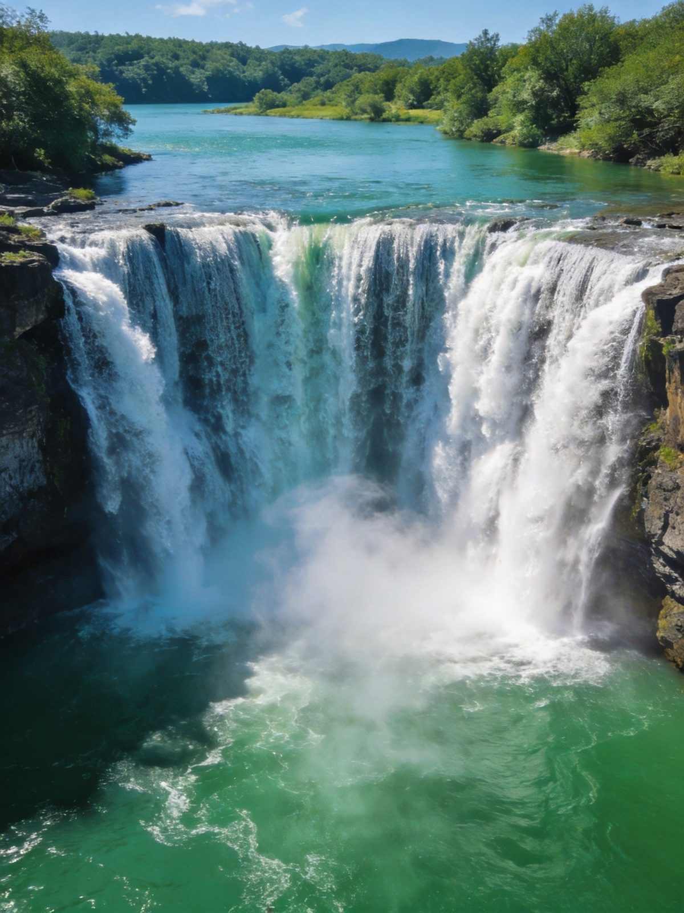
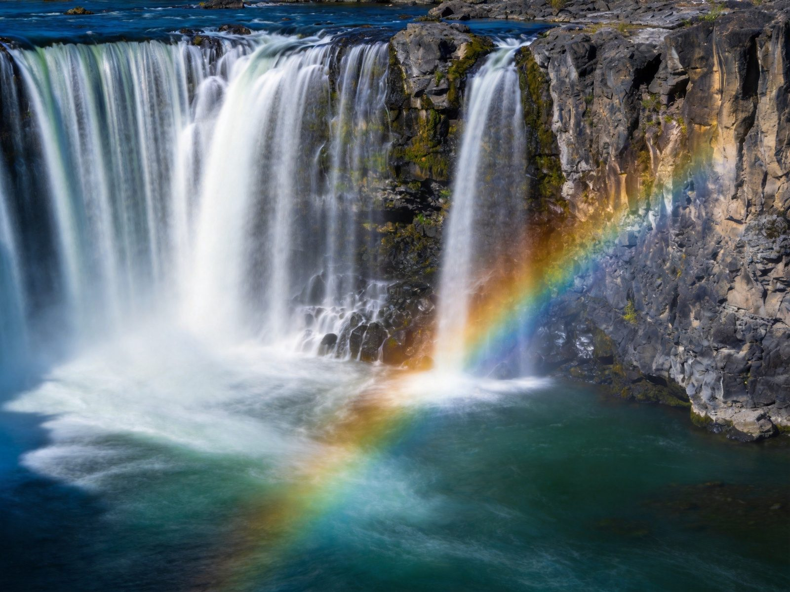
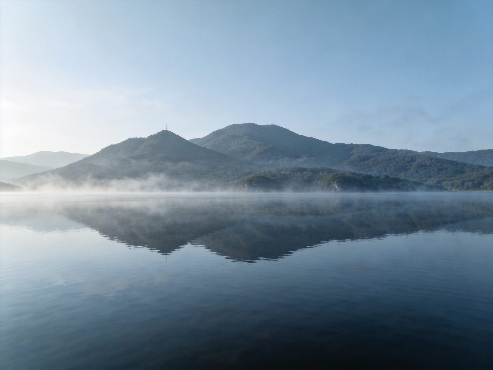
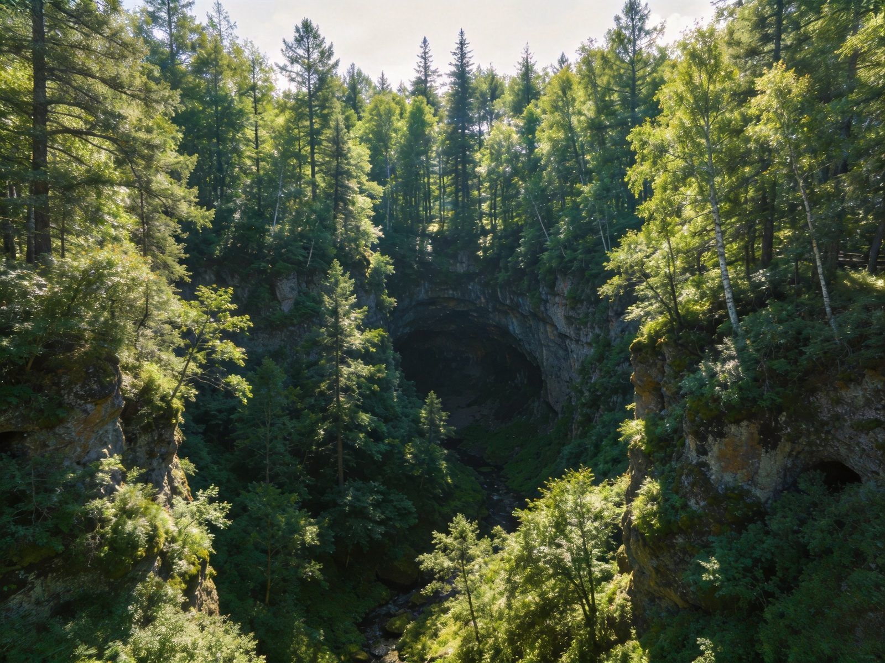
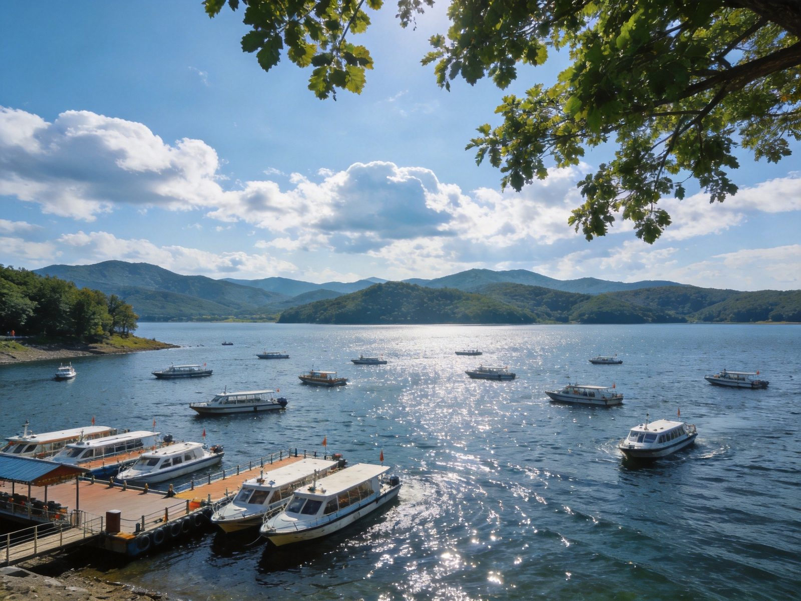

封面
总览
行前准备
Day1 镜泊湖
Day2 瀑布森林
Day3 慢行归
美食清单
组合·贴士
安全提示

JINGPOHU · 牡丹江
火山湖 · 瀑布
镜泊湖 · 吊水楼 · 地下森林
吊水楼瀑布
镜泊湖游船
地下森林
火山地貌
湖鱼
2–3 天 · A5 手册 · 盛夏避暑/秋色/摄影
1
/ 9
镜泊湖
动线总览
3 天怎么玩
Route Overview
Day 1
湖区
镜泊湖 · 游船
镜泊湖环湖 → 乘船游湖 → 湖畔漫步
Day 2
奇观
吊水楼瀑布 · 地下森林
吊水楼瀑布 → 火山口地下森林 → 火山地质感受
Day 3
慢行
湖边日出 · 返程
湖边晨景 → 觅食湖鱼 → 返程
TIP
盛夏避暑、秋季红叶
最美；两天可砍湖边慢行，专注瀑布+游湖两大主角。
TIP
🎫 镜泊湖景区门票约 100 元（含部分观光，以现场为准），游船、观光车另计。
2
/ 9
镜泊湖
行前准备
出发前，记住这 3 点
Before You Go
🏨 住哪最顺
镜泊湖景区内/湖畔
：推窗见湖，看日出方便
牡丹江市区
：吃住选择多、交通方便，
首推
景区周边民宿性价比亦可
🚄 怎么走
高铁
：哈尔滨—牡丹江约 1.5 小时，再到景区
景区距市区约 1 小时车程，
打车/包车/景区巴士
自驾最自由，山路注意天气
🎒 必带
舒适徒步鞋（地下森林台阶多）、外套（湖边风凉）
夏防晒、秋备厚衣、晴雨伞

吊水楼瀑布 · 磅礴
3
/ 9
镜泊湖
Day 1 · 湖区
Day 1 · 湖区
镜泊湖 · 游船
镜泊湖环湖
→
乘船游湖
→
湖畔漫步
🏞 镜泊湖
全国最大高山堰塞湖，湖光山色、四季皆景
盛夏碧波清凉，是知名避暑地
⛵ 乘船游湖
坐观光船纵览湖面，远山倒影、水鸟飞掠
环湖步道走走，湖畔芦苇与霞光合照
TIP
游船
选晴好上午
，水面平静倒影最美；湖畔日晒注意防晒，湖边风大备件外套。

镜泊湖 · 山色湖光
4
/ 9
镜泊湖
Day 2 · 奇观
Day 2 · 奇观
吊水楼瀑布 · 地下森林
吊水楼瀑布
→
火山口地下森林
→
火山地质
💦 吊水楼瀑布
中国著名瀑布，气势磅礴、水雾蒸腾
水量因季节变化，夏季最壮观
🌲 地下森林（火山口森林）
火山口坍塌形成的原始森林，深潭幽谷
行走其间满眼绿意，地质与生态双重奇观
TIP
地下森林
台阶较多、费体力
，老人小孩放慢走、备好水；瀑布观景台注意湿滑别拥挤。

地下森林 · 火山口
5
/ 9
镜泊湖
Day 3 · 慢行
Day 3 · 慢行
湖边日出 · 返程
湖边晨景
→
湖鱼午餐
→
返程
🌅 湖边慢行
早起看湖面日出，清晨宁静、雾气轻笼
沿湖再走走，把镜泊湖的温柔收进记忆
🐟 镜泊湖鱼
湖鱼鲜美，清蒸/炖汤都很地道
景区或市区湖鱼馆，配东北菜正合适
TIP
返程
留足去高铁/市区时间
；想连玩可顺
牡丹江市区
或
雪乡（冬）
方向。

游船游湖
湖畔晨光
6
/ 9
镜泊湖
美食清单
镜泊湖的味道
Jingpohu Eats
🐟
镜泊湖鱼
清蒸湖鱼、鱼汤、干烧 —— 湖区招牌
🍲
东北菜
锅包肉、溜肉段、地三鲜 —— 家常硬菜
🥟
饺子
酸菜猪肉、白菜猪肉 —— 北方主食
🍖
炖菜
小鸡炖蘑菇、排骨 —— 冬天暖胃
🍚
酱菜&凉菜
蘸酱菜、拍黄瓜 —— 爽口
🍯
本地特产
木耳、榛子、蜂蜜 —— 返程伴手礼
TIP
湖鱼
按斤计价、先问清价
；景区内用餐偏贵，性价比可选市区吃。
7
/ 9
镜泊湖
组合 · 贴士
怎么串着玩
Combine & Tips
🗓
两天·首推
Day1 游湖；Day2 瀑布+地下森林 —— 两大主角一天各一遍
📷
摄影党
瀑布上午水汽好看、湖面黄昏出片，早或晚进景区人少
👨👩👧
亲子
游船+湖畔最轻松，地下森林选体力允许时再走
🚗
交通
景区距市区约1小时车程，自驾/包车最自由；冬季山路防滑
🔗
连玩
牡丹江可串
雪乡
（冬）或
哈尔滨
（高铁约1.5-2小时）
TIP
镜泊湖适合
避暑
（夏）与
赏秋
（9-10月），把行程与季节配合更出彩。
8
/ 9
镜泊湖
安全提示
看清这些，玩得更安心
Stay Safe
💦
瀑布湿滑
观景台与步道湿滑，勿攀爬围栏，看护孩子
🥾
山地徒步
地下森林台阶多，穿防滑鞋、慢走、量力而行
⛵
乘船
穿好救生衣，勿在船边嬉闹，留意风浪
🌡
温差
湖边风凉、早晚温差大，备好外套防感冒
🛣
山路
自驾山路减速慢行，冬季注意冰雪路面
⚠️
紧急
紧急拨 110 / 120 / 119；景区游客中心可求助
湖光山色「WorldStip」祝你玩得尽兴 🏞
9
/ 9
牡丹江 · 镜泊湖 火山湖 2-3 日手册 · 由 WorldStip 定制
Insta360
记录美好
记录美好生活
相机指南 · CAMERA GUIDE